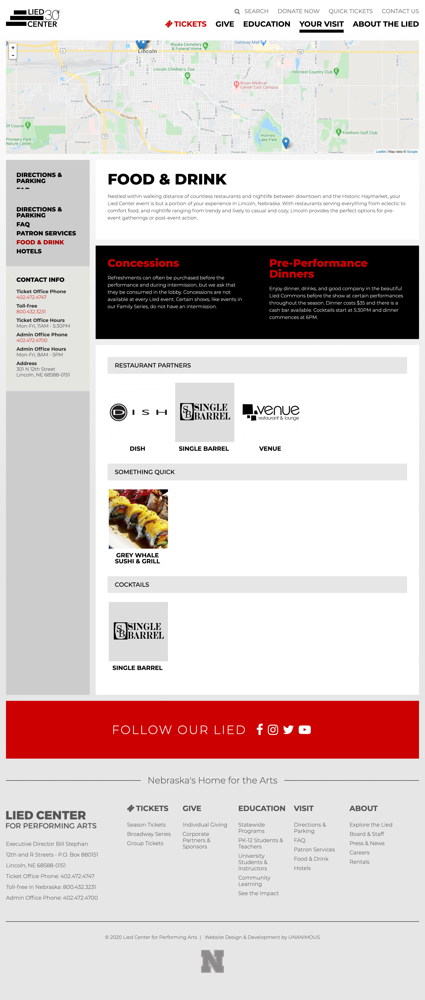

Featured Work: Lied Center
- Drupal 7
- PHP
- Less
- jQuery
- Gulp
- Git
- ADA compliancy tested
- Link to website
Lied Center needed a flexible and customizable admin interface to allow for unique page layouts and an ADA compliant site. To accomplish this, we utilized a wide array of paragraph and field collections types, along with custom programmatic layout options including background and text colors, column width and count, and text alignment. Slideshows, animations, and sticky navigations were also included to help make the aesthetics and usability more appealing. Ticket ordering was implemented with a third party that utilized our theme.


- 